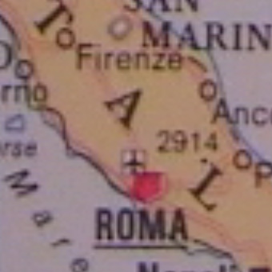
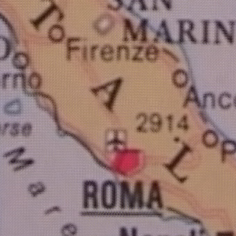

| Detail of the original frame magnified by 4 (with bilinear interpolation). | |
|  | |
| Detail of the super-resolution mosaic (4x) relized using the "nearest-pixel" technique. | Detail of the super-resolution mosaic (4x) relized using the "weighted-pixel" technique. |
|  | |